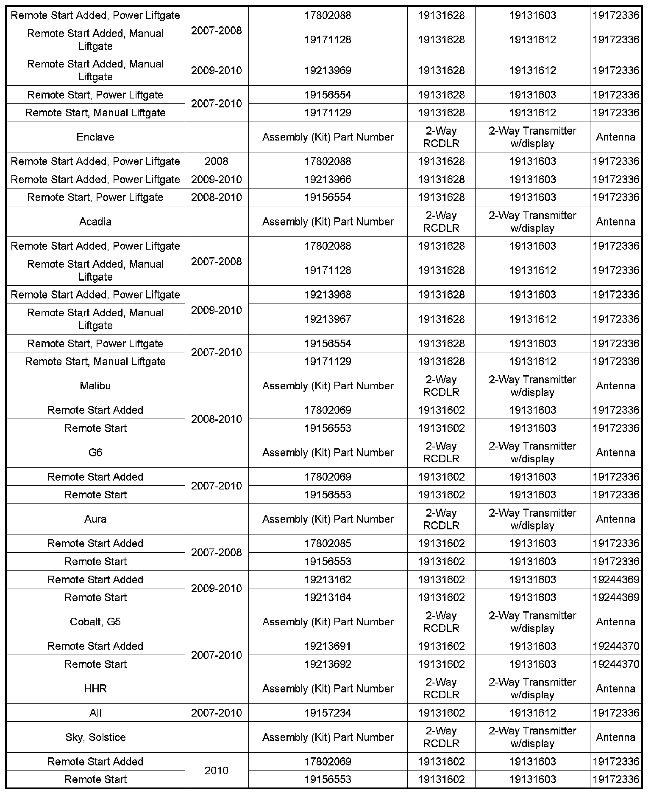

Keyless Start - 2-Way Advanced Remote Start
INFORMATIONBulletin No.: 09-00-89-025A
Date: October 26, 2009
Subject: GM Accessories: 2-Way Advanced Remote Start Systems Part Information
Models:
2007-2010 Buick Lucerne
2008-2010 Buick Enclave
2007-2010 Cadillac Escalade ESV, EXT
2008-2010 Cadillac DTS
2007-2009 Chevrolet Equinox, HHR
2007-2010 Chevrolet Avalanche, Cobalt, Silverado, Tahoe
2008-2010 Chevrolet Impala, Malibu
2009-2010 Chevrolet Traverse
2007-2010 GMC Acadia, Sierra, Yukon
2008-2010 HUMMER H2
2007-2009 Pontiac Torrent
2007-2010 Pontiac G5, G6
2008-2010 Pontiac G8
2010 Pontiac Solstice
2007-2010 Saturn AURA, OUTLOOK
2009-2010 Saturn VUE
2010 Saturn SKY
Attention:
This bulletin does not apply to GMODC dealers.
Supercede:
This bulletin is being revised to add part numbers. Please discard Corporate Bulletin Number 09-00-89-025 (Section 00 - General Information).
This bulletin is being published to provide information on locating service part numbers for GM Accessory, 2-Way Advanced Remote Start Systems.
Dealers should consult the chart below and use the correct service part. Dealers should not use entire kit for warranty or repair work.

Parts Information
Service parts common to all 2-Way Advanced Remote Start Systems
Transmitter Battery 12493150

Disclaimer